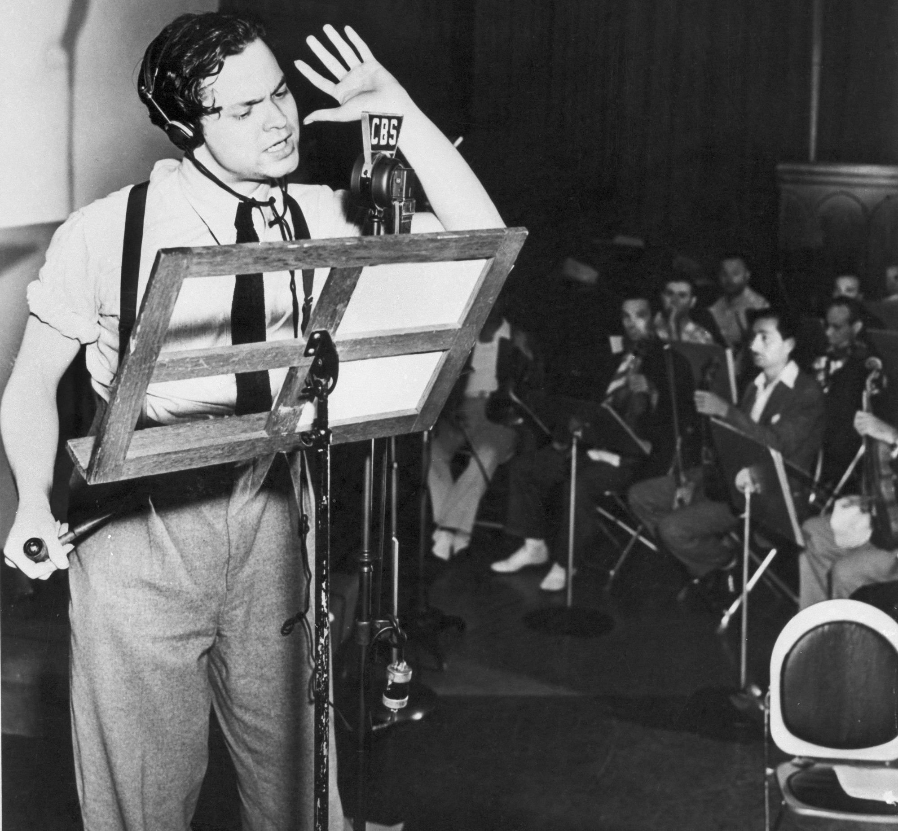

Witnessing and Escaping
HIST 102 — Chapter 25, Lecture 2
Photography · Swing · Hollywood · Radio
Section I
Two strategies, one crisis — and neither can survive without the other
Two Strategies, One Crisis
- State-sponsored documentation of suffering
- Poverty made visible — a public emergency, not a private failure
- Photography as policy instrument
- Commercial production of joy, fantasy, shared pleasure
- Temporary relief — survival without being destroyed
- Music, film, radio as democratic morale
The Camera Had Done This Before
- 1890 — Jacob Riis, How the Other Half Lives: tenement photography to pressure the state
- 1908–18 — Lewis Hine documents child labor for the National Child Labor Committee
- 1860s — Mathew Brady and Alexander Gardner: the Civil War's human cost in photographs
⏸ Pause & Reflect
Jacob Riis photographed the poor to pressure the government. The FSA photographed the poor to justify the government's own programs.
Does the institutional location of the photographer — outside versus inside the state — change how we evaluate the resulting images?
Section II
The camera as policy instrument
Roy Stryker and the Project
- Roy Stryker, economist from Columbia — not a photographer, but an institutional architect
- Assembled a team of extraordinary talent; creative latitude in the field, meticulous control over selection and distribution
- Developed shooting scripts — detailed instructions shaping what photographers looked for before they left Washington
- 1935–1943: over 160,000 catalogued images across 32 states; distributed via Life magazine, government reports, wire services
The Photographers and Their Work
- Dorothea Lange — Migrant Mother (1936), Nipomo, CA
- Arthur Rothstein — Farmer and Sons Walking in the Face of a Dust Storm (1936)
- Walker Evans — Alabama sharecroppers, later published in Let Us Now Praise Famous Men (1941)
- Gordon Parks — American Gothic (1942)
- Russell Lee — Pie Town, NM: communal resilience alongside defeat

Arthur Rothstein · Cimarron County, OK · 1936 · Public Domain · LOC/FSA
An Explicit Correction
- FSA archive overwhelmingly documented white rural poverty — a deliberate political choice calibrated to Southern Democratic congressmen
- Gordon Parks joined the FSA in 1942 — the unit's first African American photographer
- American Gothic: D.C. charwoman Ella Watson, broom and mop, American flag — invoking Grant Wood's 1930 painting
- A formal argument: Black working-class labor belongs in the national iconography

Gordon Parks · Washington, D.C. · 1942 · Public Domain · LOC/FSA
⏸ Pause & Reflect
Stryker wrote shooting scripts telling photographers what kinds of subjects and compositions to look for. If a photographer was directed to find images of "maternal endurance," is the resulting photograph honest?
- Yes — the suffering depicted was real, regardless of framing
- No — state direction makes documentary photography propaganda
- Both are true, and the tension between them is the point
- It depends on whether the photographer disclosed the instruction
Section III
What does the photographer owe the subject?
The Photograph and Its Subject
- Came to documentary work from a portrait studio — technically sophisticated about depth of field and psychological intimacy
- Worked physically close; believed the direct gaze refused passivity and insisted on the subject's inner life
- Migrant Mother (1936): six exposures; the iconic image was a deliberate compositional choice, not documentary accident
- Subject: Florence Owens Thompson, 32, a Nipomo pea-picker — identified publicly only in the 1970s

Dorothea Lange · Nipomo, CA · 1936 · Public Domain · LOC/FSA
Lange's Methodology
- Camera's obligation: human dignity — not sentimentality, not pity, but the subject's visible inner life
- Shallow depth of field concentrates attention on the face — psychological intimacy over observed distance
- The direct gaze: a formal choice that refuses the subject's passivity and implicates the viewer morally
Consent, Representation, and Extraction
- Thompson was never paid for the use of her image; appeared on a postage stamp in 1998
- Spent decades requesting privacy; identity disclosed publicly by her children in 1983 to fund her cancer care
- Evans and Agee's Let Us Now Praise Famous Men (1941): an extended meditation on the ethics of documentary extraction — "what it means to enter strangers' lives and then leave, taking their stories with you"
- Central argument: documentary representation is a form of extraction the documenter must account for
⏸ Pause & Reflect
Florence Thompson never consented to the wide distribution of Migrant Mother and spent decades requesting privacy.
Does this matter to the photograph's documentary value? To its artistic value? To its ethical status? Are these the same question?
Section IV
The body's response to rhythm is democratic — but the venues were not
The Social Architecture of Swing
- Swing era: 1935–1945, apex 1935–1939 — enabled by Prohibition's repeal, radio, and the recording industry's revival
- Dance forms — Lindy Hop, jitterbug, Big Apple — required no formal training, no significant expense
- Dance hall admission: 25–50 cents — one of the few public spaces genuinely affordable and youth-centered
- Physical catharsis as legitimate survival: pleasure was a form of resistance to catastrophe
Goodman and the Politics of Integration
- August 1935, Palomar Ballroom, Los Angeles — audience rushes the bandstand; the swing era begins
- Goodman forms racially integrated small groups: the Benny Goodman Trio/Quartet — Teddy Wilson, Lionel Hampton alongside white musicians
- Public mixed-race performance unusual in 1936; illegal in the South
- Established a visible public norm: musical excellence overrides racial hierarchy — contested, but consequential

Benny Goodman · Carnegie Hall Concert · 1938 · Public Domain
Ellington and the Cotton Club Contradiction
- Duke Ellington: Cotton Club residency made him nationally famous via radio — but the Club operated a racially segregated door policy
- Black musicians performed for white audiences in a Harlem venue Black patrons could not enter
- Count Basie: parallel tradition rooted in Kansas City's African American cultural institutions

Duke Ellington · 1946 · Public Domain
⏸ Pause & Reflect
Benny Goodman integrated his small groups in 1936. Duke Ellington played to segregated audiences at the Cotton Club throughout the swing era. Both are counted as heroes of the swing movement.
How do we evaluate the political meaning of artistic integration when it exists within commercially segregated structures?
Section V
The movie palace as democratic space — and the genres that did the work
The Economics and Architecture of Escape
- Weekly film attendance: never below 60 million — nearly half the U.S. population, even at the Depression's worst
- 10–25 cents per ticket — cheaper than a dance hall; a dime bought two hours of air-conditioned splendor
- Great movie palaces: Grauman's Chinese, the Roxy, Radio City Music Hall — designed as spaces of democratic luxury
- The democratic promise was spatial before it was narrative

Radio City Music Hall · New York · 1930s · Public Domain
Genre as Social Function
- It Happened One Night (1934)
- Class hierarchy upended without being abolished
- Dignity is not a function of income
- Public Enemy (1931), Scarface (1932)
- Systemic anger made visible and personalized
- The refusal of legitimacy as a fantasy of agency
- Wizard of Oz, Gone with the Wind (1939)
- Sepia to Technicolor: the movie theater experience enacted visually
- Hunger as lived reality, not narrative device
The Limits of Hollywood Commentary
- The Hays Code, strictly enforced from 1934: crime must not pay; sexuality regulated; "American institutions" protected from criticism
- The gangster's death, the couple's marriage, the happy ending — these were not always aesthetic choices
- Hollywood's social commentary was always indirect, always constrained by institutional self-censorship
- Depression-era film: not escape from reality, but sustained negotiation with what could not be said directly
⏸ Pause & Reflect
Screwball comedies and gangster films both addressed Depression-era resentments — but through opposite strategies: comedy versus violence, charm versus force.
What does the coexistence of these two genres tell us about the range of emotional responses the Depression produced? Which was more politically honest?
Section VI
A voice in a box, reaching through the air into private living rooms across a continent
Radio's Democratic Reach
- By 1938: radios in ~80% of American homes — the most democratically distributed medium in the country
- One-time purchase cost; zero marginal cost thereafter — the most economical entertainment investment possible under Depression conditions
- Radio's political power derived from its simultaneity: tens of millions listening at the same moment, in their own homes
- Social and geographic fragmentation — regional, ethnic, rural isolation — temporarily suspended by the shared experience of the same voice
FDR and the Fireside Chat
- Thirty Fireside Chats, 1933–1944 — the most sophisticated use of broadcast media for democratic governance to that point
- Format: conversational, not oratorical — calibrated for the home radio, not the public address system
- Hundreds of thousands of letters after each chat — people responded as if to a two-sided conversation
- Created a direct emotional bond that bypassed party structures and the press — most major publishers opposed the New Deal

Franklin D. Roosevelt · Fireside Chat · 1930s · Public Domain
First Fireside Chat
The Anxiety Beneath the Escape
- October 30, 1938 — Orson Welles' War of the Worlds broadcast, formatted as a news bulletin interrupting regular programming
- Produced genuine panic in specific communities — though the extent was partly exaggerated by newspapers seeking to discredit radio
- The audience had spent a decade experiencing catastrophes that arrived without warning — the format of emergency interruption was how real emergencies arrived
- The panic measured how much anxiety the entertainment economy of radio was being asked to contain

Orson Welles · CBS Radio · 1938 · Public Domain
⏸ Pause & Reflect
The War of the Worlds panic occurred because listeners trusted radio as a news medium. FDR used radio's intimacy to build public trust in his administration.
These are the same technological capacity used for opposite purposes. What does this suggest about the relationship between mass media and democratic governance?
Section VII
Patterns of visibility and erasure in Depression-era cultural production
The FSA's Selective Vision
- FSA archive: overwhelmingly documented white rural poverty — a deliberate calibration to Southern Democratic congressmen
- Gordon Parks' American Gothic (1942) arrived ten years after Lange's Migrant Mother — an explicit correction to the archive's omissions
- The deliberate centering of white subjects had lasting consequences for historical memory
- What the FSA preserved was not simply "the Depression" — it was what certain people, with certain institutional power, chose to preserve
The Racial Politics of Commercial Entertainment
- 30–40 million weekly listeners at peak — performed by two white men in verbal blackface
- Stereotypes of Black incompetence, dishonesty, pretension — reaching audiences no documentary could match
- Shaped white Americans' understanding of Black Americans at a national scale
- Cotton Club segregated: Black artists entertain white audiences; Black patrons excluded
- Lower royalty rates for Black musicians; radio networks reluctant to hire Black performers regularly
- Black musical innovation made commercially available to white audiences — while Black musicians were excluded from the full financial rewards
Simultaneous Visibility and Erasure
⏸ Pause & Reflect
What does this pattern of simultaneous visibility and erasure tell us about how American democratic culture actually functioned in the 1930s?
Who was the "American" in "American culture" — and who decided?
Closing: The Grace of Forgetting
- Democracy requires acknowledgment of failure
- Making suffering visible is a precondition for addressing it
- Compromised by: selective, state-directed, conducted without subjects' full consent
- Democracy also requires morale
- Joy, shared pleasure, dancing — these are legitimate forms of survival
- Compromised by: reproduced racial hierarchies; profitability depended on distraction